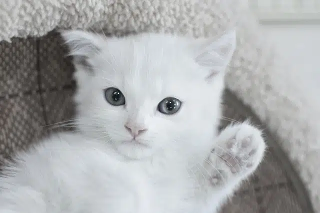
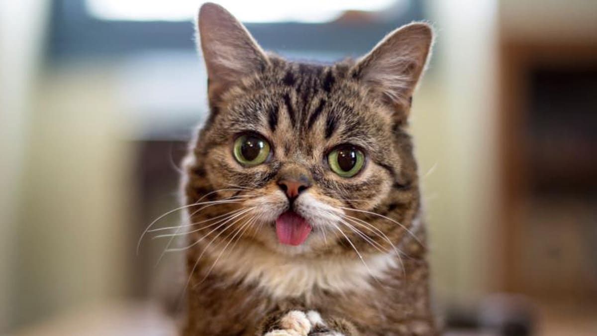
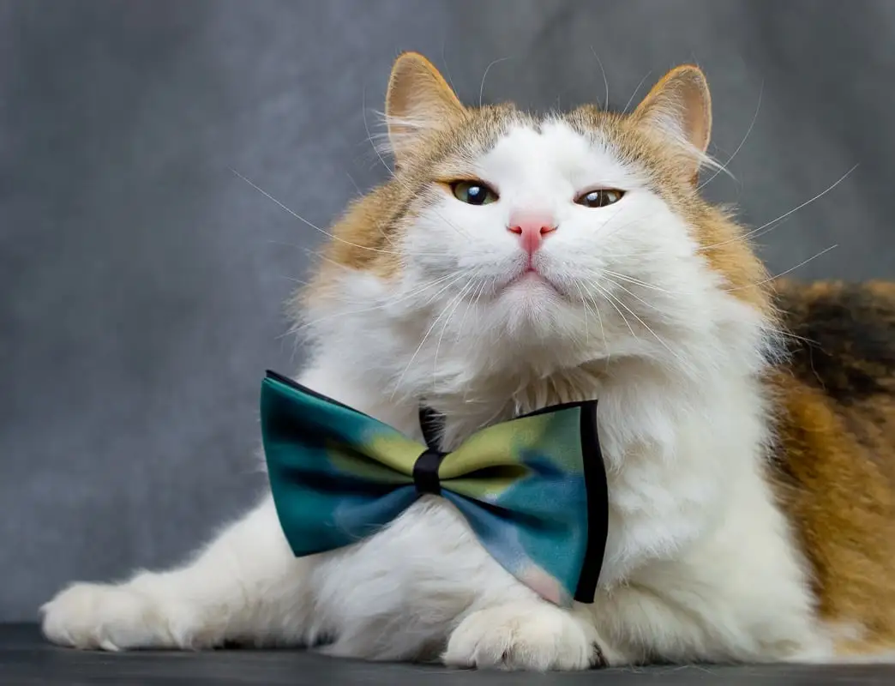

About the Cutest Cats
Cats are known for their playful and affectionate nature, making them some of the cutest pets in the world. Whether they're curled up for a nap or chasing after a toy, cats never fail to bring joy to their owners' lives.
Fact 1: Cats Have Whiskers
Cats have specialized hairs on their faces called whiskers. These whiskers are highly sensitive and help cats navigate their surroundings.
Fact 2: Cats Love to Sleep
On average, cats sleep for about 15 hours a day. They love finding cozy spots to curl up and take a snooze.

Fact 3: Cats Are Agile Jumpers
Cats are known for their incredible jumping abilities. They can leap up to six times their body length in a single bound!
Fact 4: Cats Communicate with Tail
Cats use their tails to communicate their mood and intentions. A flicking tail may indicate excitement, while a tucked tail suggests fear or submission.
Fact 5: Cats Have Night Vision
Cats have excellent night vision, allowing them to see in low light conditions. This adaptation helps them hunt effectively, even in the dark.
